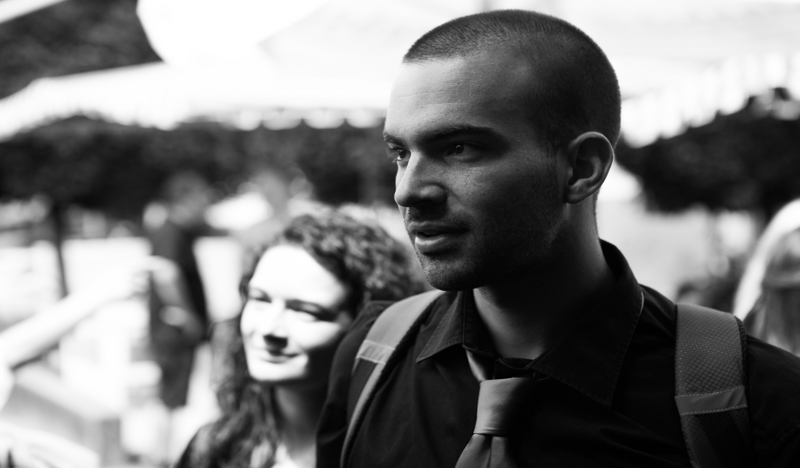

Hi! I'm Paolo, a robotics engineer with a passion for drones and autonomous systems.
I grew up in Trieste, a coastal city in North-East Italy, before moving to Torino to pursue my engineering studies at Politecnico di Torino,
where I earned both my B.Sc. in Telecommunications Engineering and my M.Sc. in Mechatronic Engineering.
In 2017, while still a student, I had the opportunity to design and implement autonomous navigation algorithms for a UAV at a local company —
an experience that deepened my interest in aerial robotics.
I later broadened my background by completing the Master in ICT and Advanced Projecting at the University of Torino.
Outside of work, I play electric guitar, occasionally write songs, and stay active through sports.
My research journey took me to the Autonomous Robots Lab (ARL), where I worked under the supervision of Dr. Kostas Alexis. I spent a year at the University of Nevada, Reno (USA), earning a second M.Sc. in Computer Science, before moving to Trondheim, Norway, where I completed my PhD at NTNU. I am now working as Senior Hardware Engineer at ScoutDI.